Сортирање, филтрирање и фреквенцијска анализа¶
У овој лекцији ћемо показати:
како сортирати табелу,
како из табеле издвојити само неке врсте (филтрирање) и како се користи опција „Autosum”, и
како се ради фреквенцијска анализа података и како се користи функција COUNTIF
Сортирање података¶
Сортирати податке значи поређати их по величини, од мањих ка већим или обрнуто. Показаћемо сада како се у Екселу могу сортирати табеле. Приликом сортирања табела Ексел преуређује врсте табеле тако да бројеви уписани у неку колону буду поређани по величини.
Корак 1. Са следећег линка преузми документ Top25YouTubers.xlsx и сними га на свој рачунар:
Табела садржи податке о првих 25 YouTube канала према броју претплатника на дан 1. јул 2019:

За сваки канал је наведен његов YouTube ранг (GRADE), име канала (NAME), колико је видеа објављено на каналу (VIDEOS), колико има претплатника (SUBSRCIBERS) и колико има прегледа (VIEWS). Табела jе сортирана по броју претплатника.
Корак 2. Сортираћемо сада табелу по броју прегледа (VIEWS). Селектоваћемо целу табелу заједно са првом врстом у којој су наведена имена колона:

Прећи ћемо на командну траку „Data” и одабрати опцију „Sort”:

Појавиће се прозор у коме можемо да одаберемо колону по којој ће бити сортирана табела:

У одељку „Column” (енгл. „колона”) кликнемо на стрелицу, па у листи која се појавила одаберемо „VIEWS” јер желимо да сортирамо табелу по броју прегледа (колона „VIEWS”):
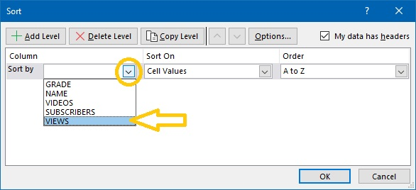{kind=link}
Потом у одељку „Order” (енгл. „редослед”) кликнемо на стрелицу, па у листи која се појавила одаберемо „Largest to Smallest” јер желимо да сортирамо табелу од већих ка мањим вредностима. (Да смо којим случајем правили „листу срама”, одабрали бисмо опцију „Smallest to Largest” која би наложила Екселу да сортира табелу од канала са најмање прегледа до канала са највише прегледа.)
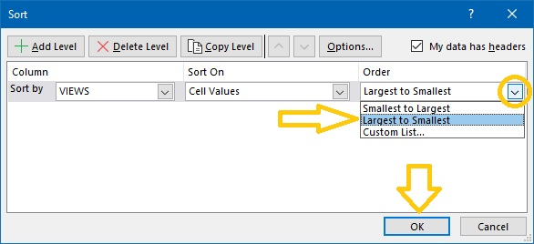{kind=link}
Када кликнемо на „ОК” добијамо сортирану табелу (редови су испремештани тако да на првом месту буде канал са највише прегледа):
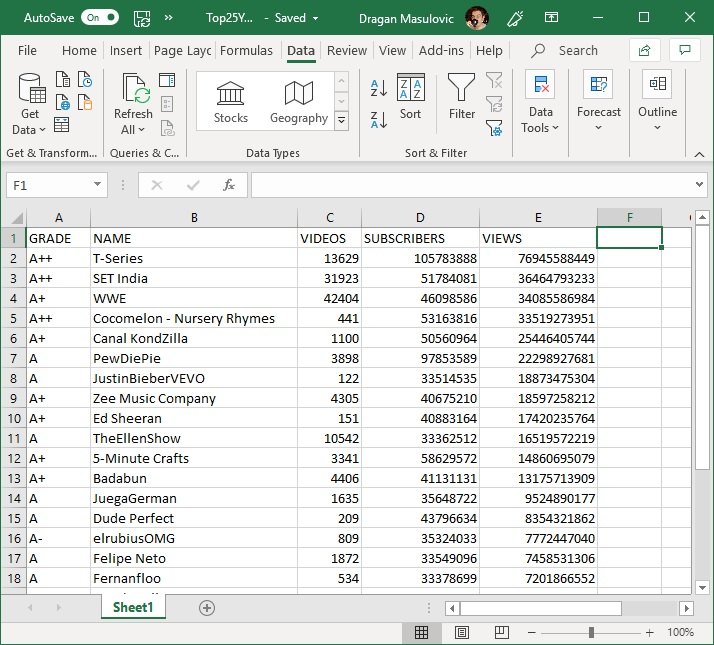{kind=link}
Корак 3. Прикажимо број прегледа по каналима хистограмом. Означимо ћелије B1:B26 и онда притиснемо тастер [CTRL] и држећи га притисутог означимо још и ћелије E1:E26

Онда одаберемо командну траку „Insert” и са ње опцију за креирање стубичастих дијаграма, па одаберемо стил који нам се највише свиђа. Ако је потребно, преместимо дијаграм да не прекрива податке:
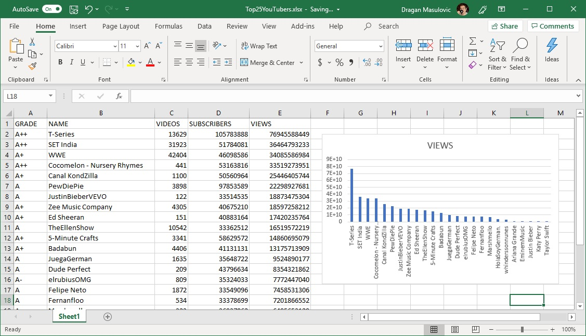{kind=link}
Филтрирање података¶
Филтрирање података се састоји у томе да се размотре само неки подаци из табеле. Рецимо да нас занима колико укупно видеа су објавили канали чији ранг је А+ (не А-, А++ или А; само А+). Једна могућност је да сортирамо табелу по колони „GRADE” па да нађемо сегмент табеле у коме се налазе вредност А+. Ово може бити озбиљан проблем ако је табела велика. Зато Ексел има могућност аутофилтер која аутоматски генерише захтеве за филтрирање.
Корак 1. Селектоваћемо само први ред табеле у коме се налазе имена колона:

и онда на командној траци „Data” и кликнути на „Filter”:
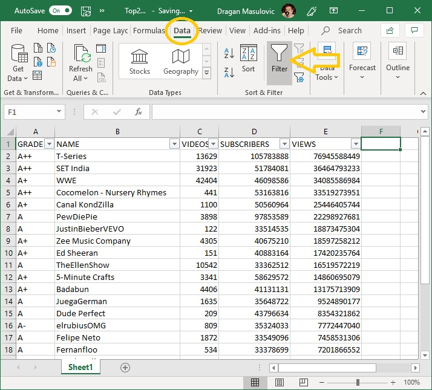{kind=link}
Поред имена сваке колоне се појавила стрелица. Те стрелице нам дају приступ критеријумима за филтрирање табеле.
Корак 2. Ако кликнемо на стрелицу поред „GRADE” појавиће се мени на коме можемо да бирамо групе података које желимо да видимо:

„Откачићемо” све „квачице” осим оне код „А+” и потом кликнути на OK:

Тако смо „профилтрирали” табелу и приказали само оне редове који у колони „GRADE” садрже вредност А+:

Важно је напоменути да остали редови нису уклоњени из табеле. Они су и даље ту, само се не виде. То је лако закључити ако погледамо редне бројеве колона:
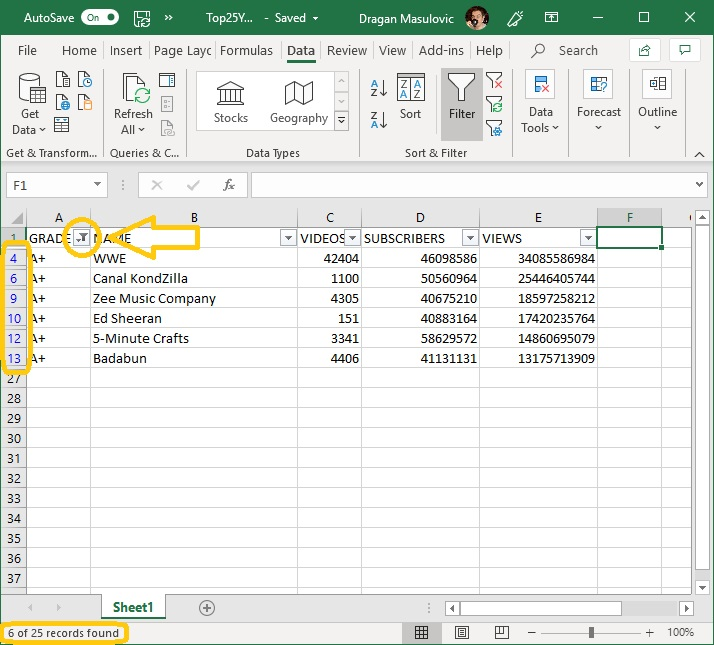{kind=link}
Осим тога, специјални знак поред имена колоне „GRADE” нам каже да је укључен аутофилтер на тој колони, а у дну прозора стоји порука „6 of 25 records found” што значи да је филтрирањем пронађено 6 редова табеле (од укупно 25) који задовољавају услове.
Корак 3. Сада можемо да утврдимо колико видеа су објавили канали чији ранг је А+ тако што ћемо сабрати бројеве у колони „VIDEOS” у профилтрираној табели.
Ако пробамо да применимо функцију SUM распон ћелија који морамо да наведемо не одговара ситуацији:
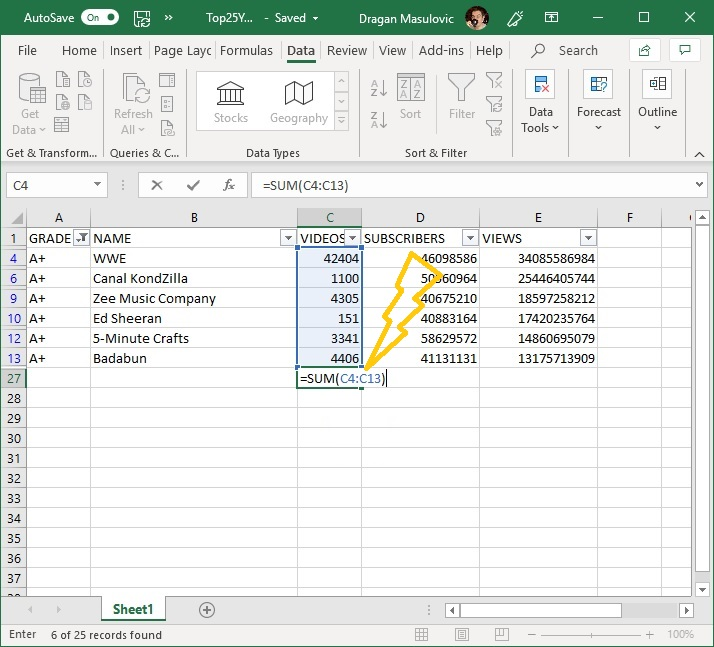{kind=link}
јер ми не желимо да саберемо све ћелије од C4 до C13, већ само оне ћелије распона C4:C13 које задовољавају услове филтера. Зато ћемо сумирање морати да урадимо другачије.
Кликнемо на ћелију C27 и са командне траке „Formulas” одаберемо „Autosum”:
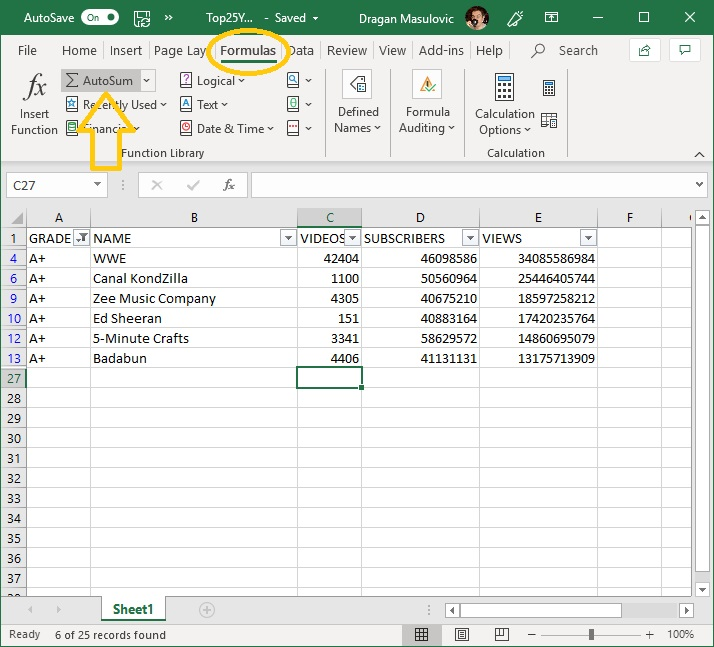{kind=link}
„Autosum” је малчице вештачки интелигентна опција која уме да проанализира контекст у коме желимо да одредимо збир и на основу тога које друге опције су укључене може да одабере праву функцију за сумирање. У нашем случају добијамо:

Дакле, „Autosum” се определио за функцију „SUBTOTAL(9, C2:C26)” што значи да ће на цео распон C2:C26 бити примењена 9. могућност функције „SUBTOTAL”, а то је тачно рачунање збира уз примену филтера:

Фреквенцијска анализа¶
Фреквенцијска анализа низа података се своди на то да се преброји колико се пута који податак појављује у низу (фреквенција = учесталост). Типичан пример фреквенцијске анализе би био да пребројимо колико канала у табели коју смо до сада анализирали има рејтинг А++, колико А+, колико А, итд.
Корак 1. Преузми поново документ Top25YouTubers.xlsx и сними га на свој рачунар да бисмо кренули од свежих података:
Табела изгледа овако:

Корак 2. Фреквенцијска анализа у односу са рејтинг канала се састоји у томе да за сваки од рејтинга који се појављују у колони А (А++, А+, А, А-, B+, B и B-) утврдимо колико се пута јављају у колони А.
У ћелију А28 унеси текст GRADE, а у ћелију B28 текст FREQUENCY; онда у ћелије А29, А30, А31, А32, А33, А34, A35 унеси рејтинге А++, А+, А, А-, B+, B и B-:

Корак 3. Да бисмо утврдили, рецимо, колико пута се у колони А јавља рејтинг А++ треба да кренемо да бројимо ћелије колоне А, али само ако је њихов садржај једнак са А++. Екселова функција која броји (енгл. count) ћелије, али само ако (енгл. if) је њихова вредност једнака датој, зове се COUNTIF.
У ћелију B29 унеси формулу:
=COUNTIF(A2:A26, "A++")

Ова функција ће проћи кроз ћелије А2:А26, пребројати колико пута се појављује А++ и тај број уписати у ћелију B29:
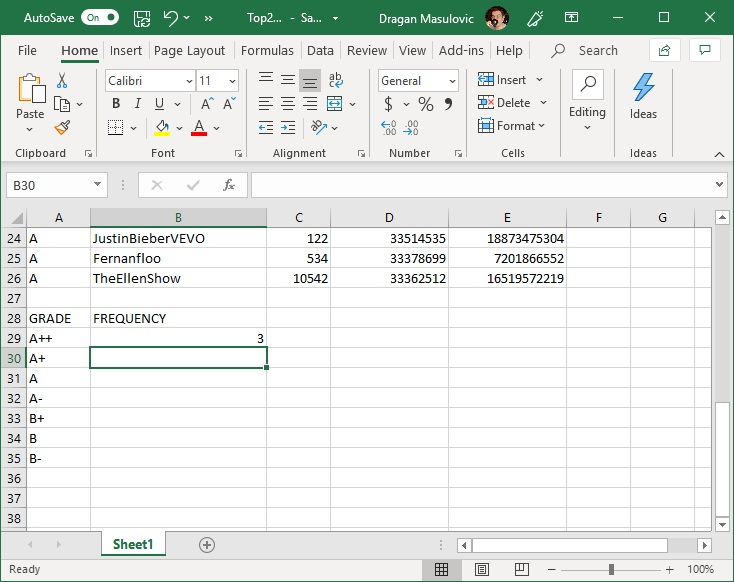{kind=link}
Потом у ћелије B30, B31, B32, B33, B34 и B35 редом унеси формуле:
=COUNTIF(A2:A26, "A+")
=COUNTIF(A2:A26, "A")
=COUNTIF(A2:A26, "A-")
=COUNTIF(A2:A26, "B+")
=COUNTIF(A2:A26, "B")
=COUNTIF(A2:A26, "B-")
Табела изгледа овако:
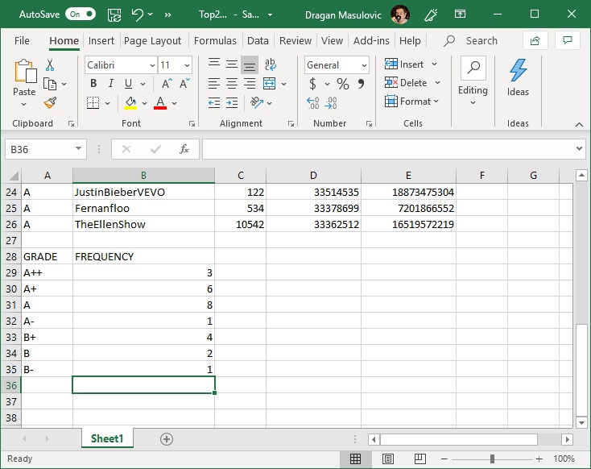{kind=link}
Фреквенцијска анализа завршена.
Корак 4. Сада ћемо показати како да брже дођемо до истог резултата. Смислићемо нешто компликованију формулу за бројање рејтинга, али ћемо зато моћи да „развучемо” по остатку табеле, уместо да уносимо седам веома сличних формула.
Обриши садржај ћелија B29:B35
а онда у ћелију B29 унеси следећу формулу:
=COUNTIF($A$2:$A$26, А29)

На овај начин смо
рекли Екселу да утврди у колико ћелија из опсега А2:А26 је уписана вредност која је наведена у ћелији А29, и
да приликом копирања формуле не сме да мења опсег А2:А26 (јер је записом $A$2:$A$26 овај опсег фиксиран).
Формула, наравно, ради свој посао врло добро:

Сада ћемо да кликнемо на ћелију B29 и да је развучемо до краја табеле:

Да проверимо да формула заиста ради, кликнућемо, рецимо, на ћелију B33 и притиснути тастер [F2]:
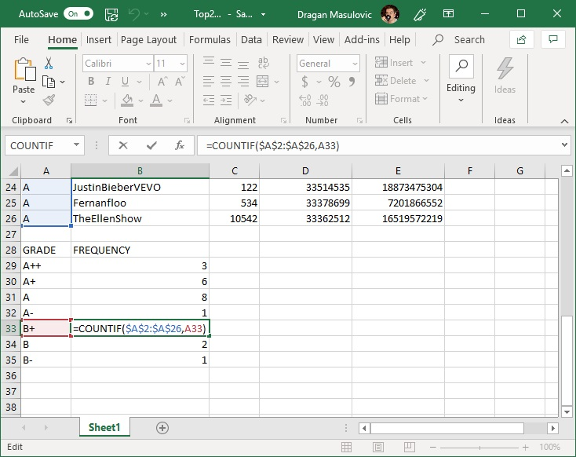{kind=link}
Видимо да се приликом копирања формуле опсег А2:А26 није променио (као што и треба, он је фиксиран), док је ћелија А29 из полазне формуле постала А33 (што и треба да се деси, јер у ћелију B33 треба уписати колико се пута у опсегу А2:А26 јавља рејтинг B+, што је вредност ћелије А33).
Корак 5. За крај ћемо утврдити колико канала у овој табели има милијарду прегледа или више. У ћелију Е28 упиши текст „BILLION+” (без наводника, наравно; примети да се милијарда на енглеском каже billion, мада може и milliard, али да не улазимо у детаље):

па у ћелију Е29 упиши формулу:
=COUNTIF(E2:E26, ">= 1000000000")

Ова формула каже Екселу да утврди колико ћелија из опсега E2:E26 задовољава услов наведен под наводницима. На крају добијамо:
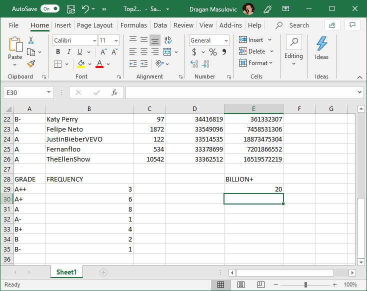{kind=link}
Задаци¶
Задатак 1. Са следећег линка преузми документ Top25YouTubers.xlsx и сними га на свој рачунар:
Табела садржи податке о првих 25 YouTube канала према броју претплатника на дан 1. јул 2019. За сваки канал у табели израчунар просечан број прегледа по видеу (количник бројева VIEWS и VIDEOS). Сортирај табелу по том параметру и прикажи првих десет канала стубичастим дијаграмом.
Задатак 2. Са следећег линка преузми документ Cricket.xlsx и сними га на свој рачунар:
Табела садржи податке о најбољим играчима крикета у историји крикета.
Корак 1. Прошири колоне табеле ако је потребно.
Корак 2. За сваког такмичара у табели израчунај параметар ARY (= Average Runs per Year) тако што ћеш поделити вредност у колони Runs разликом бројева у колонама From и To. То нам за сваког такмичара каже колико је просечно има ранова по години активног играња.
Корак 3. Сортирај табелу по колони ARY од већих вредности ка мањим.
Корак 4. Позадину ћелија за првих 25 играча у овако сортираној табели обој светло плавом.
Корак 5. Међу првих 25 играча у овако сортираној табели нађи оне који су завршили своју каријеру током XX века и позадину ћелија у којима су подаци о њима оној светло црвено.
Шта уочаваш?
Задатак 3. Са следећег линка преузми документ Plivanje.xlsx и сними га на свој рачунар:
Табела садржи податке о једном такмичењу упливању на 50 м слободним стилом. За сваког учесника дат је његов такмичарски број и резултати из две трке.
Такмичар се квалификовао у А финале ако је испунио норму за А финале, односно, ако је просечно време које му је потребно да преплива 50 м мање или једнако од норме за А финале.
Такмичар се квалификовао у Б финале ако је испунио норму за Б финале, односно, ако је просечно време које му је потребно да преплива 50 м мање или једнако од норме за Б финале, и при томе се није квалификовао у А финале.
Корак 1. Прошири колоне табеле ако је потребно.
Корак 2. За сваког такмичара у табели израчунај просечно време које му је било потребно да преплива 50 м.
Корак 3. Одредити колико такмичара се квалификовало за А финале, а колико за Б финале. Ове податке немој рачунати ручно већ користи функцију COUNTIF.
Задатак 4. Са следећег линка преузми датотеку која садржи податке о берачима воћа на једној плантажи:
Прошири колоне ако је потребно и улепшај табелу.
Одреди укупну количину јабука, крушака и трешања које су убране.
За сваког берача утврди колико је зарадио ако знаш да су износи убраног воћа дати у килограмима, а цена брања по килограму воћа је дата испод табеле са берачима.
За сваког берача утврди колико је укупно килограма воћа убрао, па на основу тога утврди колико берача је испунило норму, а колико није. Добијене податке упиши у ћелије Е25, односно, Е26. (Берач је испунио норму ако је убрао барем ону количину воћа која је уписана у ћелију B23; податке о броју берача који су или нису испунили норму немој рачунати ручно већ користи функцију COUNTIF).